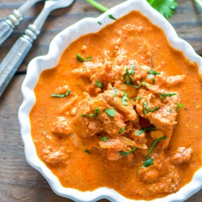

Butter Chicken
Marinade
- 2lb chicken breast cut into small pieces
- 3/4 cup plain yogurt
- 1/2 tsp kasuri methi
- 1 tsp turmeric powder
- 1 1/2 tbs melted butter
- 2 tbs garlic paste
- 1 tbs ginger paste
- 1 tsp garam masala
- 3 tbs shan buttern chicken masala
Mix all ingredients and let set for 12 hours
Makhani Gravy
- 10 garlic cloves
- 1/2 inch ginger piec
- 1 small stick cinnamon
- 2 cloves
- 1 tbs red chili powder
- 3 tbs almond powder
- 1 tsp garam masala
- 3 tomatos
- 1 onion
- 1/2 tbs sugar
- 1 tsp kasuri methi
- 4 tbs oil
- 2 tbs half and half
- Cilantro
- Salt and lemon juice to taste
Directions
In large skillet heat oil. Add marinated chicken and cook until chicken is no longer pink. Remove chicken from skillet and set aside. In microwave safe bowl put chopped onions, tomato ginger and garlic with little water. Microwave on high for 5 minutes. Grind mixture to paste. In skillet add clove cinnamon stick and cardamom. Stir for a minute then add the tomato onion mixture. Once the mixture starts bubbling add chicken and mix well. Add almond powder,Garam masala,sugar,salt,chili powder and kasuri methi. Stir until chicken is cooked and gravy becomes thick. Stir in lemon juice to taste.